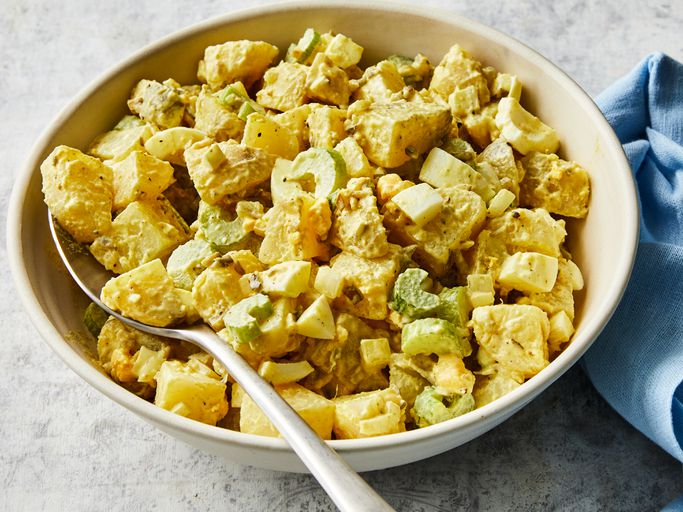

Old-Fashioned Potato Salad

Summary
This simple and delicious recipe is designed to make any one happy. Even if you are not
vegetarian, you will always come back for seconds!
Timings and Servings
- Prep Time: 15 mins
- Cook Time: 15 mins
- Chill Time: 30 mins
- Servings: 6
Ingredients
- 4 potatoes
- 2 eggs (Optional)
- 1/2 cupe of chopped celery
- 1/2 cup of relish
- 1/4 cup of mayonnaise
- 1/2 tablespoon of mustard
Directions
- Gather all the ingredients
- Bring a pot of salted water to a boil. Wait till the potatoes are tender but firm.
- Whilst the potatoes are cooking, place the eggs in a pot and cover them with cold water.
Bring the water to a boil. As soon as the water begins to boil, turn the heat off
and cover the pot. This should take 10 to 15 minutes.
- Remove the eggs from the pot and let them cool. By cooling the eggs,
it will make them easier to peel. After a couple of minutes, peel and chop the
eggs.
- Once tender, remove the potatoes from the pot, then let them cool for a couple of minutes.
By allowing the potatoes to cool down, it will make them easier to peel. Once cooled,
peel and chop the potatoes.
- Combine the potatoes, eggs, celery, relish, mayonnaise and mustard together in a large bowl.
Refrigerate until chilled.
- Enjoy!
Important - References
This recipe is created using the information provided by
allrecipes's fashioned
potato salad. All credit goes to them for the recipe and steps.
The image is taken from
allrecipes.com - DOTDASH MEREDITH FOOD STUDIOS
Return to home page